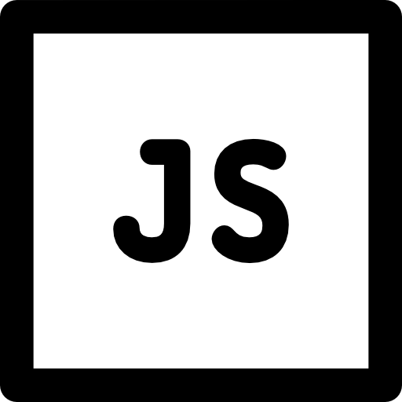
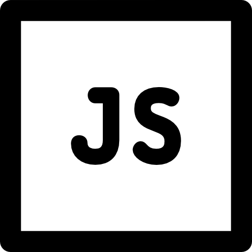

Datos personales
- Nombre Completo: Marlon Adolfo Chacón Gallo
- Fecha de Nacimiento: 16/03/2007
- Lugar de Nacimiento: San Gil, Santader, Colombia
- Edad: 17 Años
- Estado civil: Soltero
- Documento de Identidad: T.I 1098407324
Formacion Academica
- 2012 - 2017: Escuela José Antonio Galán
- 2018 - 2023: Colegio Nacional José Antonio Galán
- Actualmente: Campuslands
Titulos Obtenidos
- 2023: Bachiller Académico
- 2023: Técnico en implementación y mantenimiento de equipos electrónicos industriales
Profesión
Developer Software
Ubicación

Habilidades
Habilidades Técnicas Backend
 

Poseo sólidos conocimientos en lenguajes de programación como Python, Java y JavaScript, adquiridos a través de proyectos prácticos y estudios formales. Mi experiencia incluye el desarrollo de aplicaciones backend en Python, con el uso de frameworks como Django y Flask, así como la creación de soluciones robustas en Java utilizando Spring. Además, tengo un dominio de JavaScript, en el backend con Node.js.
Bases de Datos

SQL: Conocimientos de bases de datos relacionales como MySQL, PostgreSQL, Oracle, o SQL Server. Saber cómo diseñar, consultar y optimizar bases de datos.
NoSQL: Familiaridad con bases de datos NoSQL como MongoDB, Redis, Cassandra, etc.